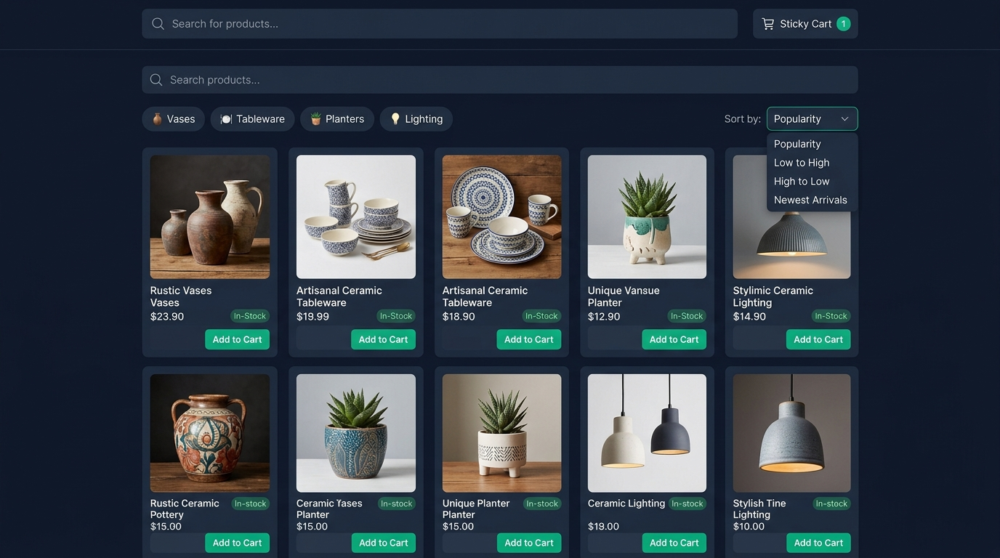

1. Product grid, search and filtering
Board ../step1-grid.jpg (1376 × 768, SHA-256 456797ff0d…)
· live page index.html
Reference board

A 1376-wide board image; it is a planning reference, not a capture of a working page.
Live demo — 390 × 844
Iframe viewport 390 × 844, one column, chips wrapped.
- Palette: page
#0f172a, cards#1e293b, inset surfaces#162032, action emerald#10b981, muted text#94a3b8— the values the board's generation prompt names. - Grid: one column below 34rem, two to 34rem, three from 60rem. The board renders five columns at its own width; the demo keeps its card anatomy (art → name → variant → price → stock → action) and lets the count follow the viewport instead of pinning five across.
- Search:
form#search-formwithinput[name=q]of typesearchlabels itself "Search parts" and filters the twelve cards in place as you type; the query is echoed in the results line and in the empty state. - Chips: the board's category chips are drawn as
aria-pressedtoggle buttons; one category is active at a time and the grid narrows. A "Kiln parts" chip is added so the spec'sbearingquery has a real catalogue hit — the board's four chips have no such category. - Sort: the dropdown re-orders the same cards client-side by the board's four options (featured order, price each way, newest).
- Stock states: "In stock", "Low stock — 3 left" and "Out of stock" are all rendered; the out-of-stock card's action is a disabled button described by its own pill, so the reason is never colour alone.
- Art: twelve hand-drawn SVG shapes from one in-document sprite, toned by
[data-tone]tokens. No image request, no web font, no CDN.